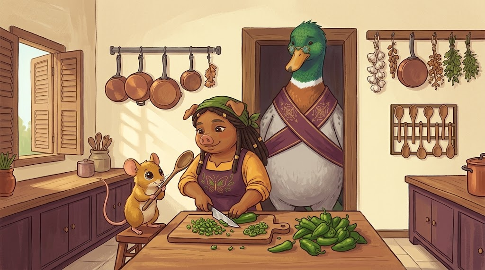

The Episodes
Newest at the top. Every episode ends with the Advisor's Notes, in which Thomas explains what he thinks happened — and, on occasion, admits he had it backwards.

Episode OneThe Small Yeses
Four promises are made in a single afternoon, and every one of them is made kindly.
On saying no early, and saying it kindly.
 Episode Two
Episode Two
The Column Nobody Read
A stranger arrives with her own oven in a week the kingdom has no oven, and everybody is asked to be delighted about it.
On trust as a total you can only reach by adding up small things.
 A Chart from the Kingdom
A Chart from the Kingdom
The Map of the Keep
Six rooms, working inward, and one mark that can be set anywhere. Carolyn drew it on the back of a bread list, the Friday after Fair Week.
Who gets which key, and how anybody moves
 A Wing of the Kingdom
A Wing of the Kingdom
The Dojo
Where the kingdom rehearses the conversations it is bad at. Nothing here happened. Bruno is acting, and enjoying it more than is decent.
Two ditches and a road — and the mask on your own face
About this place
Pigglyvale is small on purpose. Nobody here is a villain, everybody here is wrong sometimes, and the apologies are real ones — said out loud, with the parts named. That is most of what the kingdom is for.